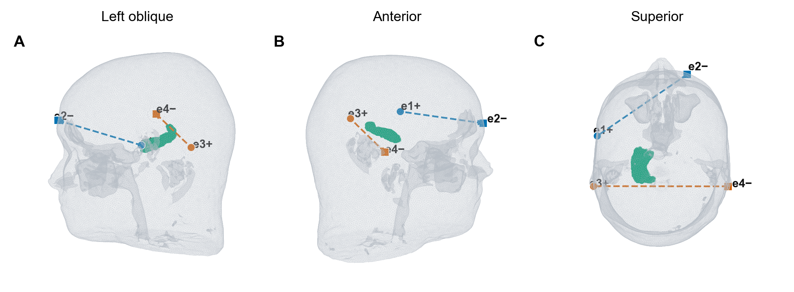
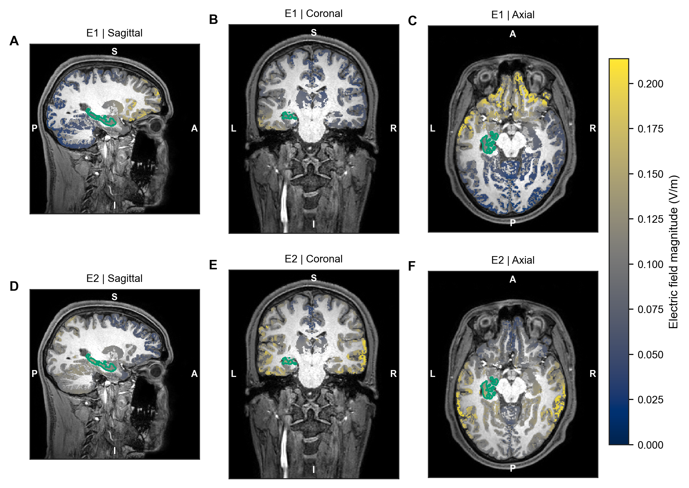
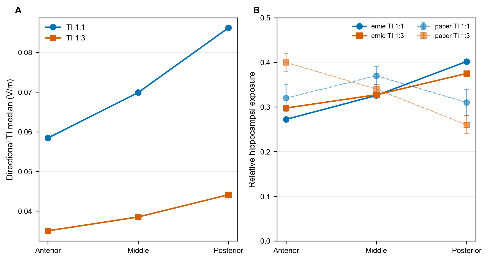
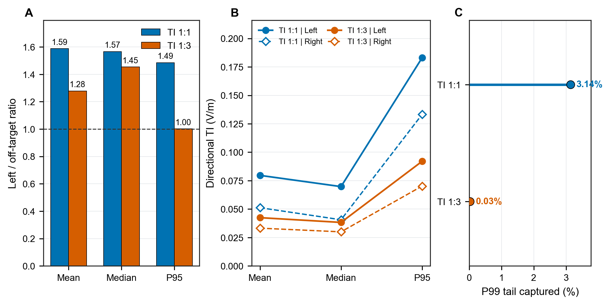
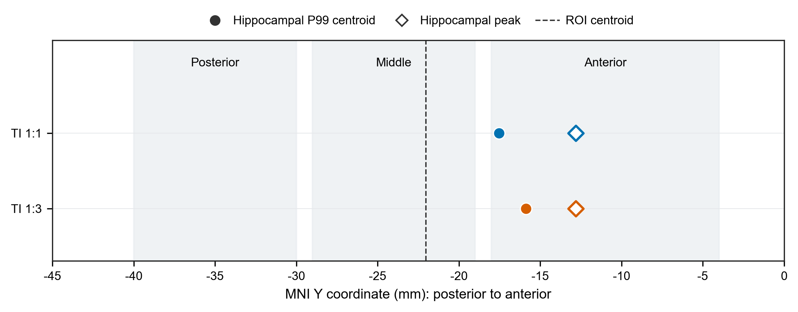
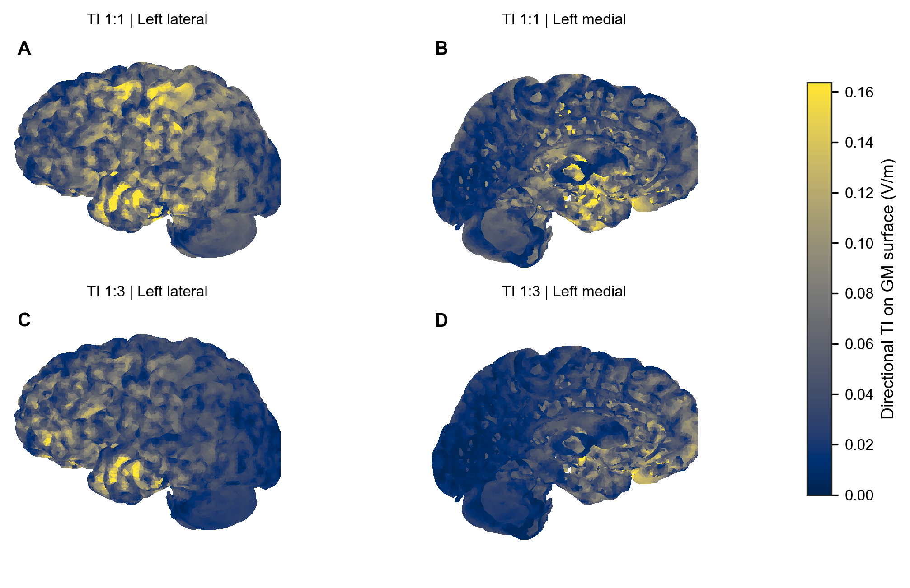

TI 1:1
- FT7(+1.0 mA) / Fp2(-1.0 mA)，2.005 kHz
- TP7(+1.0 mA) / TP8(-1.0 mA)，2.000 kHz
比较 TI 1:1 与 TI 1:3 的左海马场强、海马内高值区位置和非靶区暴露。
本项目通过计算机仿真比较不同刺激方案在目标脑区及周围组织中的电场分布。
比较方案如下。每个条件的电极、线圈或通道设置均按项目参数记录。

电流幅值按 peak-to-baseline 记录。具体通道、电流和频率以方案参数及数据文件为准。
MRI 数据来源：[填写]；扫描信息：[填写]；头模型构建与审核：[填写]。

| 检查 | 状态 | 依据 |
|---|---|---|
| 载波网格一致性 | 通过 | E1 与 E2 的节点和单元逐项一致 |
| TI 公式独立复算 | 通过 | 最大绝对误差 0 V/m |
| DTI 方向数据覆盖 | 需注意 | 有限方向向量覆盖 99.22% 灰质单元；方向可靠性未单独评估 |
| 跨受试者稳健性 | 未评估 | 当前仅包含一个示例受试者 |



结果同时包括靶区、对侧或邻近参照区和非靶区，避免只看目标脑区而忽略其他组织中的电场。





| 方案 | 区域 | 平均值 (V/m) | 中位数 (V/m) | P95 (V/m) | 体积 (mm³) |
|---|---|---|---|---|---|
| TI 1:1 | 左海马 | 0.0796 | 0.0697 | 0.1830 | 4077.2 |
| TI 1:1 | 右海马 | 0.0512 | 0.0406 | 0.1332 | 4275.5 |
| TI 1:1 | 前部皮层采样区 | 0.0895 | 0.0556 | 0.2755 | 1199.9 |
| TI 1:1 | 中部皮层采样区 | 0.0784 | 0.0666 | 0.1931 | 1284.3 |
| TI 1:1 | 后部皮层采样区 | 0.0735 | 0.0737 | 0.1375 | 1385.2 |
| TI 1:1 | 全部非靶区灰质 | 0.0501 | 0.0445 | 0.1232 | 715577.8 |
| TI 1:3 | 左海马 | 0.0424 | 0.0383 | 0.0920 | 4077.2 |
| TI 1:3 | 右海马 | 0.0332 | 0.0300 | 0.0702 | 4275.5 |
| TI 1:3 | 前部皮层采样区 | 0.0626 | 0.0365 | 0.1929 | 1199.9 |
| TI 1:3 | 中部皮层采样区 | 0.0534 | 0.0478 | 0.1229 | 1284.3 |
| TI 1:3 | 后部皮层采样区 | 0.0404 | 0.0430 | 0.0716 | 1385.2 |
| TI 1:3 | 全部非靶区灰质 | 0.0332 | 0.0263 | 0.0918 | 715577.8 |
| 指标 | 单位 | 含义 |
|---|---|---|
| 平均值 | V/m | 按四面体体积加权的区域均值 |
| 中位数 | V/m | 按四面体体积加权的区域中位数 |
| P95 | V/m | 按四面体体积加权的第 95 百分位数 |
| 体积 | mm³ | 有效分析单元总体积 |
| 区域 | 用途 | 定义 | 坐标空间 |
|---|---|---|---|
| 左海马 | 靶区 | Harvard-Oxford 25% 最大概率图谱左海马 | MNI / ernie subject conform |
| 右海马 | 对侧参照 | Harvard-Oxford 25% 最大概率图谱右海马 | MNI / ernie subject conform |
| 前部皮层采样区 | 非靶区采样 | 蒙太奇相关的 10 mm 球形灰质采样区 | MNI / ernie subject conform |
| 中部皮层采样区 | 非靶区采样 | 蒙太奇相关的 10 mm 球形灰质采样区 | MNI / ernie subject conform |
| 后部皮层采样区 | 非靶区采样 | 蒙太奇相关的 10 mm 球形灰质采样区 | MNI / ernie subject conform |
| 全部非靶区灰质 | 非靶区 | 有效灰质分析域减去左海马靶区 | MNI / ernie subject conform |
适用边界：结果仅适用于 ernie 单受试者、当前电极位置、组织电导率和数值设置。
下列材料可用于阅读结果、整理论文和复核计算。草稿中的图表和方法需结合研究设计及统计方案复核后再投稿。
采用 SimNIBS 4.6.0 和 hypre 求解器。两组载波共用同一网格，灰质分析包含 1,337,567 个四面体。
灰质单元中心变换到 MNI 空间后，以最近邻方式采样 Harvard-Oxford 25% 最大概率图谱中的左、右海马。
主要指标为沿 DTI 主方向计算的方向投影 TI；同时提供方向无关的 TImax。两者均为调制包络幅度，不是神经激活阈值。
| 编号 | 图题 | 文件 |
|---|---|---|
| 图 1 | 刺激电极与两组回路 | PNG · SVG · PDF · 数据 |
| 图 2 | 个体头模型与左海马靶区 | PNG · SVG · PDF · 数据 |
| 图 3 | 两组载波基础电场 | PNG · SVG · PDF · 数据 |
| 图 4 | TI 1:1 电场分布 | PNG · SVG · PDF · 数据 |
| 图 5 | TI 1:3 电场分布 | PNG · SVG · PDF · 数据 |
| 图 6 | 海马前、中、后三段比较 | PNG · SVG · PDF · 数据 |
| 图 7 | 左海马与局部皮层比较 | PNG · SVG · PDF · 数据 |
| 图 8 | 靶区、对侧海马与非靶区比较 | PNG · SVG · PDF · 数据 |
| 图 9 | 左海马内高值区位置 | PNG · SVG · PDF · 数据 |
| 图 10 | 皮层表面电场 | PNG · SVG · PDF · 数据 |
{kind=link}
{kind=link}
{kind=link}
{kind=link}
{kind=link}
{kind=link}
{kind=link}
{kind=link}
{kind=link}
{kind=link}
{kind=link}
{kind=link}
{kind=link}
{kind=link}
{kind=link}
{kind=link}